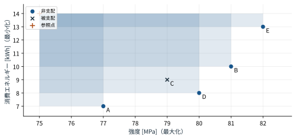
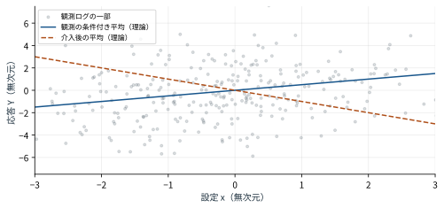

第11章 ベイズ最適化・能動学習の発展
学習目標 基本形から何を拡張する必要があるかを、目的、実験の制約、観測できる情報、入力空間から判断する。代表的な考え方と、その適用に必要な前提を説明する。
11.1 何が複雑になったかを特定する
第10章では、温度と保持時間を選び、一つの強度測定を受け取りました。装置や原料が増えたときは、データ構造と最終判断を先に書き出します。例えば電力も下げたいなら目的が二つになり、受領した原料ロットを変更できず、ロットを確認してから温度を決めるなら、操作は状況に応じて選びます。第5章の獲得基準や第8章の情報量を一般化するには、何の改善や何についての情報を評価するのかを定義します。
| 問題に加わった条件 | 出発点 |
|---|---|
| 競合する目的があり、取引関係を見たい | 多目的BO |
| 最終的な条件の合否を調べる必要がある | 制約付きBO |
| 評価の各回で安全基準を守る必要がある | Safe BO |
| 整数・カテゴリ・組合せがある | Mixed・Discrete BO |
| 同じ設計を異なる近似・費用で評価できる | Multi-Fidelity BO |
| 過去の装置・材料の観測を新しい課題に活かしたい | Transfer BO |
| 二つの条件のうち好ましい方だけを返せる | Preference BO |
| 局所モデルで扱いたい広い探索空間がある | Trust Region BO |
| 先に観測する状況に合わせて操作を決める | Contextual BO |
| 観測ログと操作による効果を区別したい | Causal BO |
11.2 多目的BO 強度と消費エネルギー
目的が強度 \(s(x)\) [MPa] の最大化とエネルギー \(e(x)\) [kWh] の最小化だとします。\(x\) は操作条件のベクトルです。まとめて最大化するため、目的ベクトルを \(F(x)=(s(x),-e(x))\) とします。ある点 \(a\) の目的が点 \(b\) 以上で全成分が揃い、少なくとも一成分で上回れば、\(a\) が \(b\) を支配します。どの候補にも支配されない目的ベクトルの集合が、この候補集合でのParetoフロントです。
ハイパーボリューム（HV）は、基準となる参照点 \(\mathbf r\) より全成分で良い点 \(\mathbf v\) に対し、\(\mathbf r\) と \(\mathbf v\) が張る軸平行な箱の和集合の体積です。二目的では面積なので、強度とエネルギーの単位を使うこの例では MPa·kWh です。重なった面積は一度だけ数えます。比較するときは目的の向き、目的の尺度、参照点を揃えます。参照点はどの範囲でトレードオフを評価したいかを表します。
第11章のNotebook では、既知の目的値が5点ある題材を手計算と公開APIで照合します。
import torch
from botorch.utils.multi_objective.hypervolume import Hypervolume
from botorch.utils.multi_objective.pareto import is_non_dominated
strength = torch.tensor([77., 81., 79., 80., 82.])
energy = torch.tensor([7., 10., 9., 8., 13.])
objectives = torch.stack((strength, -energy), dim=-1)
front = is_non_dominated(objectives)
hv = Hypervolume(ref_point=torch.tensor([75., -14.]))
volume = hv.compute(objectives[front])
非支配点は A、B、D、E です。参照点は（75 MPa、14 kWh）で、面積は 37 MPa·kWh です。強度の区間を75–77、77–80、80–81、81–82 MPaに分けると、各帯の面積は \(2(7),3(6),1(4),1(1)\) となります。Dを追加する前の集合に対して、Dは 6 MPa·kWh の面積を加えます。
未知の目的値を測る前に、第5章のEIと同じ発想で、面積増分の事後期待値を最大化できます。これが期待ハイパーボリューム改善（EHVI）です。観測ノイズがあると既存点のフロントにも不確実性があるため、NEHVIはその不確実性も積分します。意思決定者が価値の重みを既に決めている場合は、各目的を同じ評価尺度にし、単一の効用を定義する選択肢もあります (Daulton ほか 2021年)。
11.3 制約付きBOとSafe BO いつ守る条件か
例えば、装置が許す温度上限は候補を出す前に判定できる既知の入力制約です。一方、試験して初めて判明する強度以外の含水率などは未知の出力制約です。後者で、候補 \(x\) の改善量を \((F_x-b)_+\)、適合条件を \(G_x\ge0\) とします。ここで \(F_x\) は予測する目的値、\(b\) は現在の適合済みの基準値、\(G_x\) は予測する制約の余裕、\(a_+=\max(a,0)\) です。新しい候補の期待改善量を適合した場合だけ数えるなら、
\[ \alpha(x)=\mathbb E\!\left[(F_x-b)_+\,\mathbf 1\{G_x\ge0\}\mid\mathcal D\right] \]
と書けます。\(\mathbf 1\) は条件が成り立つとき1です。目的と制約の事後が条件付きで独立であれば、EIと適合確率の積に分けられます。相関する場合は、同時事後から積の期待値を評価します。適合済みの基準値がまだない場合は、適合点を見つけるための規則を別に定めます (Gardner ほか 2014年)。
評価そのものが基準を逸脱してはならない場合は、Safe BOの設定です。代表的な方法は、確認済みの安全な初期点から始め、安全信号の事後下限が基準を満たすと判断できる候補を選び、得た観測で既知の範囲を広げます。保証は観測モデル、信頼域、初期安全集合などの仮定に依存します。モデル上の適合確率を、安全設備や承認手順の代わりに用いることはできません (Sui ほか 2015年)。
11.4 Mixed・Discrete BOとTrust Region BO 探索空間から考える
第10章の温度を実数、処理回数を整数、原料品種をカテゴリとすると、候補は異なる変数型の組です。整数では前後の関係が意味を持ちます。カテゴリに0、1、2と番号を振っても、番号差が材料の類似度を表すとは限りません。モデルで変数の型に合った共分散を使い、候補計算にも各型の実行可能集合を渡します。少数のカテゴリなら離散部分を列挙し、各組で連続部分を探索できます。設備の順序や組合せを選ぶ場合は、候補の近傍を入れ替えや追加・削除で定義できるかを考えます。連続解を後から丸めると、候補の重複や制約違反が生じる場合があります (Ru ほか 2020年)。
Trust Region BOでは、良い観測値の周辺などに探索領域を設け、改善の履歴に応じてその大きさを更新します。TuRBOでは、局所モデルと局所的な候補生成を組み合わせます。広い領域で滑らかさが一様でないと考える問題では、局所モデルが比較候補になります。一方で離れた領域にある有望点を見落とし得ます。再スタートや複数の探索領域の必要性を、初期点や予算と合わせて判断します (Eriksson ほか 2019年)。
11.5 Multi-Fidelity・Transfer・Preference 観測の形式を広げる
Multi-Fidelity BOでは、同じ設定で、安い近似評価と高価な本評価を選べます。例えば粗い計算格子と細かい格子でシミュレーションを回す場合、入力 \(x\) に評価の忠実度 \(\ell\) を加えた \(f(x,\ell)\) を考え、最終推薦は本評価の \(\ell_\star\) で比較します。粗い計算が本結果に与える情報と費用の両方を考える必要があります。粗い試験で設定の順位が逆転する領域があるなら、粗い観測の件数だけを増やしても目標での精度が上がるとは限りません。本評価での確認と、忠実度をまたぐ対になる試験を計画します (Kandasamy ほか 2017年)。
Transfer BOでは、前製品のデータや同系統の装置を情報源として、新しい課題の試験数を減らせるか検討します。始め方には、過去に有望だった条件から測るウォームスタート、タスク間の共分散を使うモデル、情報源ごとのモデルを重み付きで使うアンサンブルがあります。温度の意味や目的値の定義が揃っているか、新しい課題に対して過去モデルの順位がどの程度当たるかを小規模に点検します。関係の弱いデータが判断を悪くする場合は負の転移と呼びます。対象タスクだけを使う方法を比較の起点にできます (Feurer ほか 2018年)。
Preference BOでは、絶対点の代わりに、条件 \(a\) と \(b\) のどちらを好むかを測ります。潜在効用 \(u(a),u(b)\) と比較誤差の尺度 \(\tau>0\) を用い、例えば \(a\) が選ばれる確率を \(\Phi((u(a)-u(b))/\tau)\) と置きます。第9章とのつながりは、二値ラベルを生むのが単独の潜在値から二つの効用差に変わる点です。効用に同じ定数を足しても効用差は変わりません。比較する相手、評価者、提示順を記録し、複数の評価者や同順位の扱いも観測設計に入れます (González ほか 2017年)。
11.6 Contextual BOとCausal BO 状況と介入
Contextual BOでは、先に観測する状況 \(c\) を固定したうえで操作 \(x\) を選びます。例えば納入された原料の特性を事前に測り、そのロットに対する温度を選びます。モデルは \((x,c)\) に対する応答を予測し、候補計算で変えるのは \(x\) です。状況が決まる前に設定を決める場合には、その時点で利用できる状況分布で効用を平均するなど、別の決定を定義します (Krause と Ong 2011年)。
Notebookでは状況0の二つの操作の効用を5と2、状況1では1と6とします。二つの状況を等確率とすると、状況ごとに操作を選ぶ場合の平均効用は 5.5、先に一つの操作へ固定する場合の最良平均効用は 4.0 です。
Causal BOでは、例えば操作変数を外から固定したときの期待応答 \(\mathbb E[Y\mid\mathrm{do}(X=x)]\) を最大化する設定を考えます。\(\mathrm{do}(X=x)\) は、値 \(X\) を決めていた仕組みを置き換えて \(x\) に固定する操作です。ログで \(X=x\) だった行を集めた \(\mathbb E[Y\mid X=x]\) は、ログの設定が他の要因にも左右される場合、介入した結果と異なります (Aglietti ほか 2020年)。
小例として \(U,\epsilon_X,\epsilon_Y\) が互いに独立な標準正規変数で、\(X=U+\epsilon_X\)、\(Y=-X+3U+\epsilon_Y\) とします。\(U\) は記録されていない共通の要因です。第2章の条件付き正規分布から \(\mathbb E[U\mid X=x]=x/2\) なので、観測ログでの平均は \(-x+3x/2=x/2\) です。介入時には \(U\) の分布がもとのままなので、平均は \(-x\) になります。

合成観測データ5,000件を単回帰した傾きは 0.518 でした。観測の傾きの理論値0.5と、構造方程式から計算した介入の傾き−1を比べます。
この二本の直線は、設定と応答の相関からだけでは区別できません。何を操作でき、どの変数が交絡し、どの仮定で介入効果を判断できるかを明示します。状況を事前に観測して操作を選ぶ問題と、観測ログから介入効果を求める問題は、同じデータに両方現れることもあります。
11.7 演習とまとめ
- 確認。 多目的の小例でCを除いてもHVが変わらない理由を説明してください。参照点を強度76 MPa、エネルギー14 kWhへ変えた面積も求めてください。
- 操作。 Notebookの状況0が使われる確率を0.75にして、状況ありで決めるときと固定操作を使うときの平均効用をそれぞれ求めてください。
- 発展。 原料ロットを受け取ってから設定を決め、強度は評価時にだけ得られ、各試験に装置上の既知制約があるとします。操作、状況、観測、候補の制約を列挙してください。ロットと設定の両方が過去ログで偏る場合、ログを使う前に何を確認しますか。
手法の名前から選ぶ前に、決める量、測れる量、いつ守る制約か、何を評価するかを書きます。評価と停止の設計は第12章で整理します。